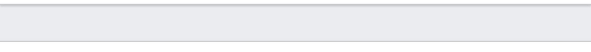
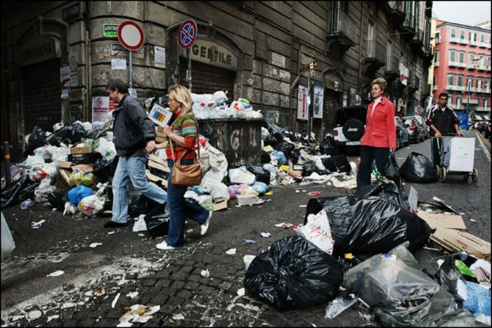

Хуевая статья

Страна Говна — ебучий задник мира, гигантское островное говнище, застрявшее между ебенями в Южно-Клоакском море [2]. Прославилась на весь мир [3] тотальным пиздецом, несметными залежами натурального дерьма [5], своей долбоёбской столицей — городом Моча [3]. Девиз страны: «Заебись и не выебешь».
Уебичные статьи
Жирный Флурин (англ. Fat Flurin)— легендарный долбоёб и предприниматель, известный тем, что создал хуеву тучу многообещающих проектов и просрал их все в самый интересный момент. Наиболее ебануто известен как основатель платформы Struckd, которую он продал толпе бездарных уёбков за дохуище стрипсов из KFC.

ГУЛАГия (официальное название — Унитарная Федерация ГУЛАГия) — ебучий ад на земле, тоталитарная мудистская яма, расположенная на долбаном материке Анонизм. Уже 14 лет ведёт бессмысленную бойню с частной военной компанией «ЧВК Уберунтерменши», которая по сути является сборищем ебаных нацистов. По ебучему пророчеству, эта пиздецовая война закончится только к 88 году, но всем уже похуй.
Жирный правак-очко порвак (англ: Fat fascist) Родился от инцеста евреев (обязательно мужчин). Во время родов упал башкой об кафель и осознал себя истинным арийцем и борцом за белую расу. Купив паленый Thor Strainer и футболку GNLS (Good night left said) начал зиговать и пиздить маленьких детей нерусской национальности. Может быть отписан и обоссан куча раз, но всегда вернется в движ или будет оправдываться фразой "я... Я... Я. Ополит, правда". Некоторые индивидуумы отличаются возможностью "Мусорнуться", написав заявление за грабёж и побои. Больше пиздюлей от левых и аполитов боятся только, if его видео с зигой увидит мать или полиция.
Адекватные статьи

Олег Верник (укр. Олег Вернік) — украинский общественный и политический деятель, основатель и бессменный лидер партии «Захист Праці». Широкую известность получил благодаря эксцентричному поведению, провокационным заявлениям и народному образу «простого парня с улицы».
Эйренхаймское Государство (официальное название — Манктшталловский Эйренхайм, или же просто Эйренхайм) — государство, расположенное на континенте Клинуэлл, известное своей милитаризацией, ультранационализмом и авторитарной формой правления. Страной управляет Вождь Эйренхаймской Нации, пока что единственный и до сих пор правящий Вождь — Генрих Фон Манктшталле. Вождь является почти полным лидером, страна имеет парламент, министров и т.д. Эйренхайм известен тем, что он не проиграл ни одной войны и завоевал 5 государств [2].
Самопиарные статьи

«Мои рассказы» — телеграм-канал пламенного агитатора и борца с историческим невежеством @Michael338f, посвящённый ламповому и позитивному освещению деятельности коммунистов и революционеров всех мастей. Канал был основан 22 сентября и с тех пор методично промывает мозги подписчикам в лучших традициях агитпропа.

«Контрактники» представляют собой уникальный пример Telegram-канала [3], который пытается создать пространство для полярных точек зрения внутри пророссийского информационного поля. Жёсткие рамки, ограничивающие радикальную оппозицию, но допускающие умеренную критику, отражают сложность ведения дискуссий на острые темы [1]. Канал сочетает в себе функции клуба по интересам [4] (монтаж видео, военная техника), новостного агрегатора и политической площадки. Агрессивный стиль подачи, использование сленга и мемов характерны для его аудитории [2]. Девизом канала является фраза: «Контрактники — лучший выбор [5]».
Далбаебские статьи
«Империя Рвани Рих» — это пиздецовая вселенная, которая родилась на руинах ебаного тиктока, как мощный посыл всем долбоёбам, играющим в фашизм. Если коротко: это история о том, как конченые свинорылые унтерменши объявили священную войну советским сортирам, и как они получили по ебалу от Чекистов.
Интеллектуальные статьи
Национал-большевистские тенденции в политике СССР в период 1941—1953 годов — это комплекс идеологических и практических мер, предпринятых руководством Советского Союза во главе с И. В. Сталиным, которые характеризовались синтезом официальной коммунистической доктрины с элементами великодержавной политики, национального патриотизма и имперского наследия России. Данный период отмечается исследователями как время значительной трансформации государственной идеологии в сторону этатизма и национальной консолидации. Де-факто эти меры привели к формированию режима, соответствовашего ключевым принципам национал-большевизма, даже при сохранении официальной марксистско-ленинской риторики.
Базированные статьи
Anti-Communist Action (также известная как Anticom) — это ебучее сборище долбоёбов, конченых ультраправых уёбков и вырожденцев, базирующееся в США и Канаде [1][2][3]. Эта банда мудаков сама себя называет «правым ответом антифе» [4], но на самом деле это просто стадо ебаных неонацистских свиней, которые открыто проповедуют нацистскую идеологию и таскаются на неонацистские тусовки [5][4][6]. Эти дерьмовые выблядки также работают вышибалами на всяких альтрайтовых и белых супрематистских шабашах [6]. Но самый пиздец в том, что эта помойка напрямую связана с неонацистской террористической организацией Atomwaffen Division — они делятся друг с другом членами (и не только), а также обмениваются инструкциями по ведению боя и изготовлению бомб [6]. Короче, обычные конченые фашистские мудаки, от которых воняет за километр.
Изображение года блять
Самая чистая улица в городе Моче (Страна говна)